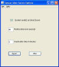

Tymeac Alter Server Options
This is the way to alter server options at runtime.
The non-frame version of this class is TyAltSvrClient, below.

(click for full image)
Elements:
Sys.exit(): This Checkbox is
Not Checked for no shut down
thread,
Is Checked for yes. Yes is the
default
The RMI server is keep alive by a thread that never ends. Tymeac Server also issues a
never ending wait() so that the garbage collector does not eat necessary variables
In order to end Tymeac Server after a normal shut down, Tymeac starts a thread at shut
down. This thread calls System.exit(0) which ends the Java Virtual Machine. Not
Checked for this option does not start this thread. The name of this thread
is found here.
Monitor Interval: The interval, in
seconds, that the Tymeac Monitor sleeps. Another way of saying
this is the delay between running of the Monitor. (If the original value was
zero, meaning NOT to use a monitor, then values entered here are ignored
since the Monitor is not running.) Tymeac also uses this interval for timing
of how long requests are in the system. When over this (interval (times a factor)) a
request may be marked as possibly stalled.
Altering this value also affects the timing variables.
Inactivation Minutes: This is the time, in
minutes, to inactivate the Tymeac Server when no activity (see
below) takes place for this interval. This is only valid for the Remote Object
Activation System and when specifying a Monitor Interval, above.
Buttons
Import: This button loads the current
settings.
Alter: This button alters the settings in the running
server.
Activity:
An inactive Tymeac Server has no currently executing synchronous or asynchronous
requests.
- Requests in the Stall Array are active asynchronous requests.
- Timed-out synchronous requests are active until the Monitor frees the request.
- Recursive requests, whether synchronous or asynchronous, are active.
- Notification requests from the Monitor are active.
The inactivation time is irrelevant to the Server's Distributed Garbage Collector's
Lease Value (java.rmi.dgc.leaseValue). Tymeac does not use the unreferenced notification
of the java.rmi.server.Unreferenced interface.
When there are no executing requests and there has been no request activity for this
time interval, the Monitor executes the shut down user exits,
if present, and calls: java.rmi.activation.Activatable.inactive().
com.tymeac.client.TyAltSvrClient (JavaDoc)
This is the Non-GUI equivalent of the GUI Class, above. An example of how to use this
class is: com.tymeac.demo.TyDemoClient_AltSvr.java in the
<TymeacHome>source/com/tymeac/demo directory.
Constructor 1 -- has no arguments. This is for the RMI Server. The constructor gets a
new instance of a Tymeac internal class that is similar to TySvrComm
Constructor 2-- is for the internal server. The single argument is the Tymeac
Server Interface, TymeacInterface.
Instance Methods --
TyAltSvrElements importElements(null)
Returns the Elements List
TyAltSvrElements alterElements(TyAltSvrElements
ele)
Returns the Elements List after altering the server according to the
passed parm.
|
{kind=link}